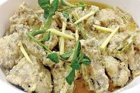

White Kharai

Description
- White karahi is a Pakistani Dhaba (roadside restaurant) food.
It is a white-colored tomato-free version of traditional red karahi.
It is enriched with yogurt and cream.
The recipe evolved in the hands of restaurant cooks.
OLD PRICE 2199
NEW PRICE 2099
Back To Main Page